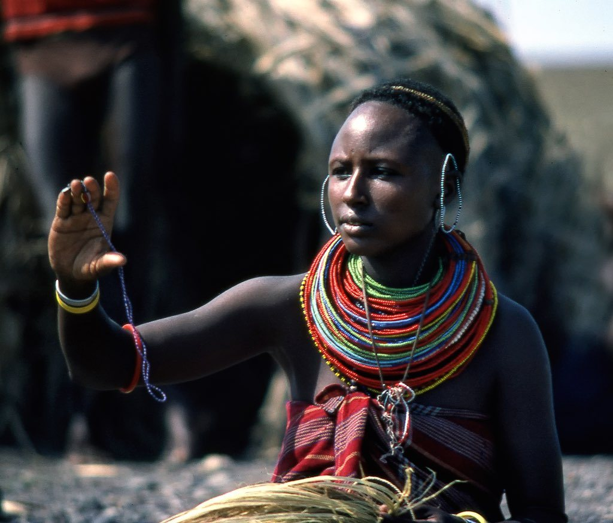

.jpg){kind=link}
Braun et al. · Oldowan at Namorotukunan (Nature Communications, 2025) ↗
The study locates the archaeological levels and relates them to the basin’s geology.
Deep dives / Africa & Middle East
Namorotukunan stretches the archaeological view of early toolmakers across multiple horizons. Groups working stone returned to the northeastern Turkana Basin through changes in water availability and vegetation.
The map shows the Namorotukunan research area in the Koobi Fora Formation.

Approximate public research locality on a modern terrain map.
About 2.75, 2.58 and 2.44 Ma
Three archaeological horizons in the northeastern Turkana Basin. [1]
4.40°, 36.33°The Koobi Fora Formation preserves three archaeological levels with flakes, cores and battered stone. The tools share features across the levels despite changes in the local environment. This gives the researchers three windows on a durable toolmaking practice. [1]
The investigators combined magnetic polarity, regional volcanic marker beds and sedimentary correlations to estimate the ages. An alternate model that includes a gap in deposition gives slightly older ages for the two younger levels. Soil chemistry and fossils help reconstruct the shift toward drier and more variable settings. [1]
Some animal bones bear marks attributed to butchery. Together with the stone assemblages they show tool-assisted foraging at this increasingly dry basin margin. The time between layers leaves long gaps in what can be said about how often hominins used the locality. [1] [2]
Placing Namorotukunan in human-family chronology depends on bracketing stratified volcanic ash layers (40Ar/39Ar), cosmogenic nuclide burial ages, or paleomagnetic reversals above and below the artifact or footprint horizon rather than dating stone flakes in isolation. Reworking, fluvial transport, and cut-mark/percussion equifinality remain key variables evaluated in every new study. [1] [2]
Rather than identifying a single exclusive ancestor, this locality serves as a tightly constrained chronological anchor that must be compared side-by-side with contemporary Rift, southern, north African, and Eurasian finds inside the playable Human Family map. [1]
| Anchor Locality | Published Age Horizon | Primary Evidence Signature | Key Research Limitation | Sources |
|---|---|---|---|---|
| Namorotukunan | About 2.75, 2.58 and 2.44 Ma | Three archaeological horizons in the northeastern Turkana Basin. | The map shows the Namorotukunan research area in the Koobi Fora Formation. | [1] |
Open the source maps for their original detail, legends and dates. Their coverage and reproduction terms belong to the issuing institution.
The study locates the archaeological levels and relates them to the basin’s geology.
Open this era on global Explore ↗ Open Africa & Middle East atlas ↗ Climate, sea level & ice-sheet context ↗
Sources checked and linked above; geological and historical dating methods follow the primary papers.